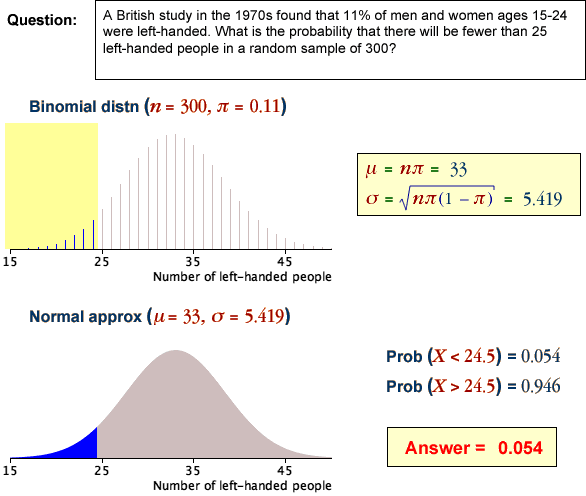

Use of the normal approximation to the binomial distribution
When the sample size, n , is large, the probability of the number of successes, X, being within an interval may involve addition of many individual small binomial probabilities.
P( a ≤ X ≤ b ) = P( X = a ) + P( X = a + 1 ) + ... + P( X = b )
This sum can be difficult to evaluate by hand and rounding errors can lead to inaccuracies. Even on a computer, such summations are unnecessarily difficult.
An alternative is to use a normal approximation. Its accuracy depends on the value of n being large enough. A common rule-of-thumb for using a normal approximation is when
nπ > 5 and n(1-π) > 5
The examples below use a normal approximation to evaluate binomial probabilities.
Examples

The binomial distribution underlying each question is approximated by a normal distribution with the same mean and standard deviation. The probability in the question is evaluated from the area under the normal distribution (using the methods described earlier for the normal distribution).
Note the translation of the range of values into one involving 1/2. It is called a continuity correction in this context.